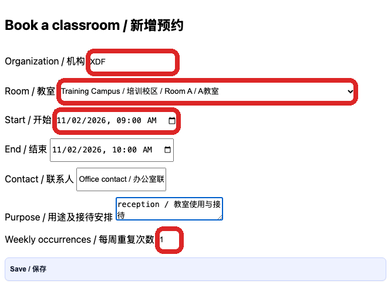
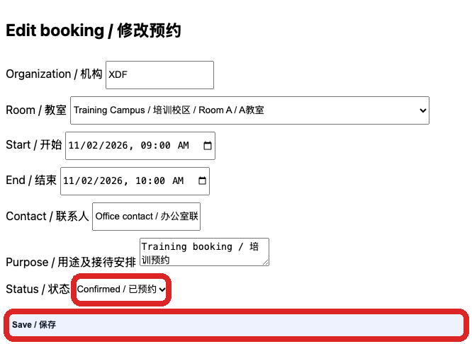

Track XDF and 2B classroom bookings
教务、接待及获授权管理者 / Academic staff and authorised managers
使用方法 / How to use按编号逐步操作，红框标出本步操作位置；页面或权限不一致时停止并联系主管。
Follow each numbered step. Red boxes identify the relevant control. If the page or access differs, stop and contact your manager.
从 Lead Desk 打开 Classroom bookings。先核对日期及现有预约，确认需要安排接待或办公室值班的时间。
Open Classroom bookings from Lead Desk. Check the date and existing bookings, including any office reception arrangements.

在 Organization 输入 XDF 或 2B，选择 Room、Start 和 End；填写 Contact 及 Purpose。Weekly occurrences 表示总共重复几周；只预约一次填 1。
Enter XDF or 2B as Organization. Select Room, Start and End; add Contact and Purpose. Weekly occurrences is the total number of weeks; use 1 for a single booking.
点击 Save。系统提示冲突时先核对教室及时间，选择可用时段。保存后在预约列表确认机构、教室、时间与状态。
Select Save. If a conflict is shown, check the room and time and choose an available slot. Verify the organisation, room, time and status in the list.
在预约列表点击 Edit。调整日期、教室或状态；已取消选 Cancelled，已使用可选 Used，然后点击 Save。
Select Edit in the booking list. Change the date, room or status; choose Cancelled if cancelled or Used once used, then select Save.

预约人、接待联系人和到场安排要清楚；有冲突或页面提示已被修改时先刷新并联系负责人。
Check the contact and reception plan. If there is a conflict or another person changed the record, refresh and consult the responsible manager.